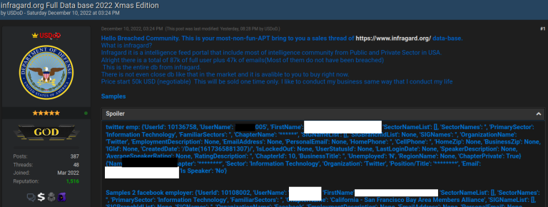
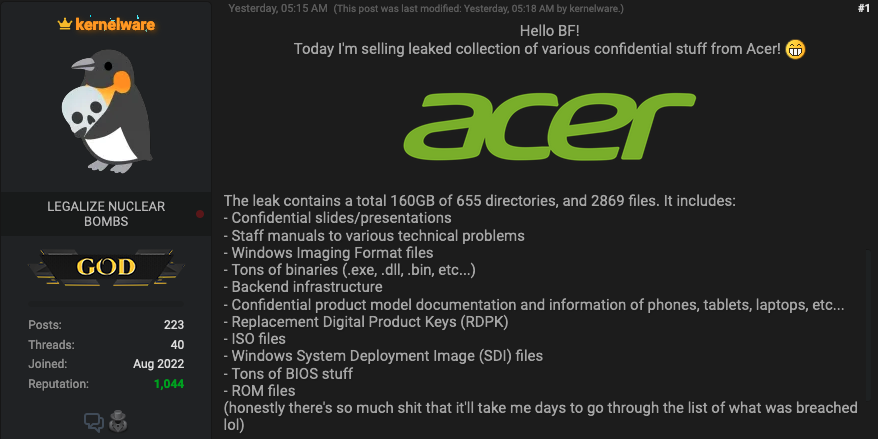
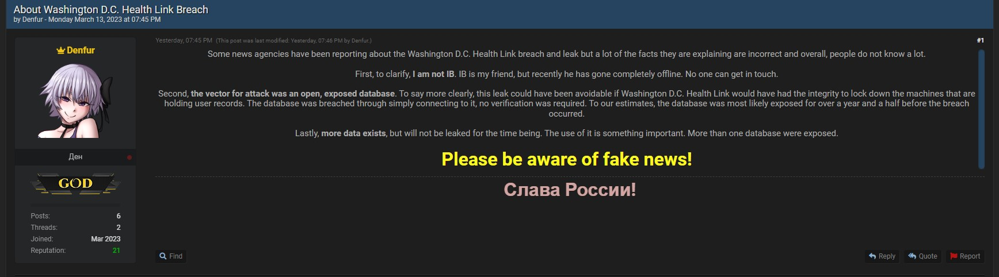

before diving into the situation, we first need to understand how BreachForums came to be. BreachForums was made to replace an online forum called RaidForums. RaidForums was founded in 2015, and quickly became a well established hub for all things cybercrime. in early 2022, it was taken down following an international law enforcement operation. this operation resulted in the arrest of its founder, who operated under the alias "Omnipotent"- this effectively disrupted one of the most prominent platforms for cybercrime.
BreachForums was founded by Pompompurin in March of 2022- a month before the shutdown of RaidForums, likely in anticipation of its shutdown. Pompompurin was well-known in the community for his role in maintaining and operating the forum, and quickly gained notoriety. there were numerous incidents that likely caught the FBI's attention:
12/10/2022 - user "USDoD" tries to sell a database he claimed had information of over 80,000 InfraGard employees. Infragard later confirms there were more than 80,000 breached.

USDoD's forum post
03/06/2023 - user "kernelware" tries to sell data allegedly stolen from Acer. the leak contains back-end infrastructure, confidential product information, confidential slides/presentations, and more.

kernelware's forum post
03/09/2023 - user "Denfur" posts a thread with ~200 breach entries from DC Health Link, then promises to release more. Denfur claims to be a Russian national, and says he did it out of patriotism.

denfur's forum post
Pompompurin was arrested on 03/15/2023, and was charged with conspiracy to commit access advice fraud, eventually receiving 20 years of supervised release. after his arrest, BreachForums admin "Baphomet" took control of BreachForums. however, he believed the forum had been compromised by law enforcement, so he shut it down, before later restarting it with hacking group "ShinyHunters". on 06/23/2023, law enforcement seized the clearnet domains for BreachForums.
after this, it gets complicated, so i'll put some bullet points that kinda outline what happens
05/15/2024 - FBI seizes another clearnet site, as well as a telegram and an onion site (sites only available via Tor)
05/30/2024 - ShinyHunters retake the website from law enforcement (somehow), and ShinyHunters allege that Baphomet was arrested.